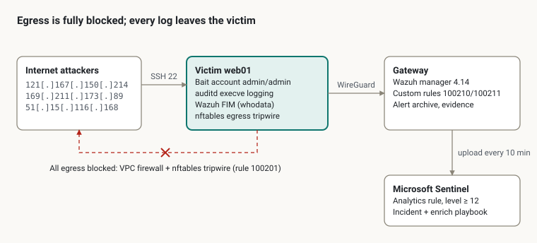
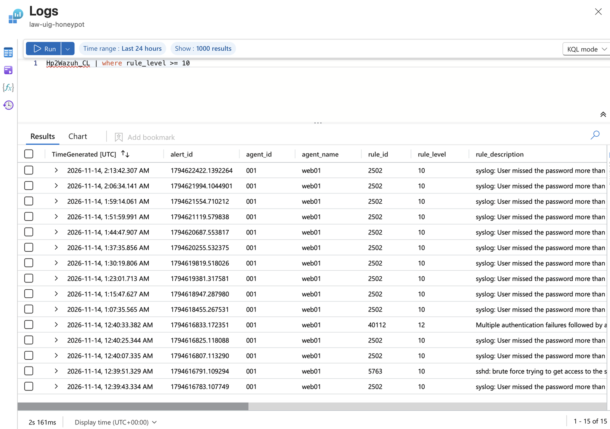
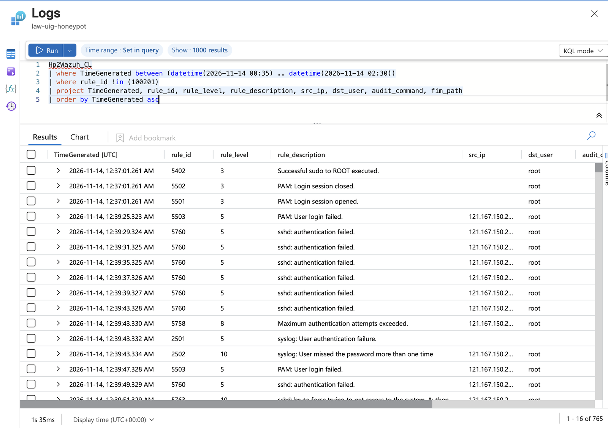
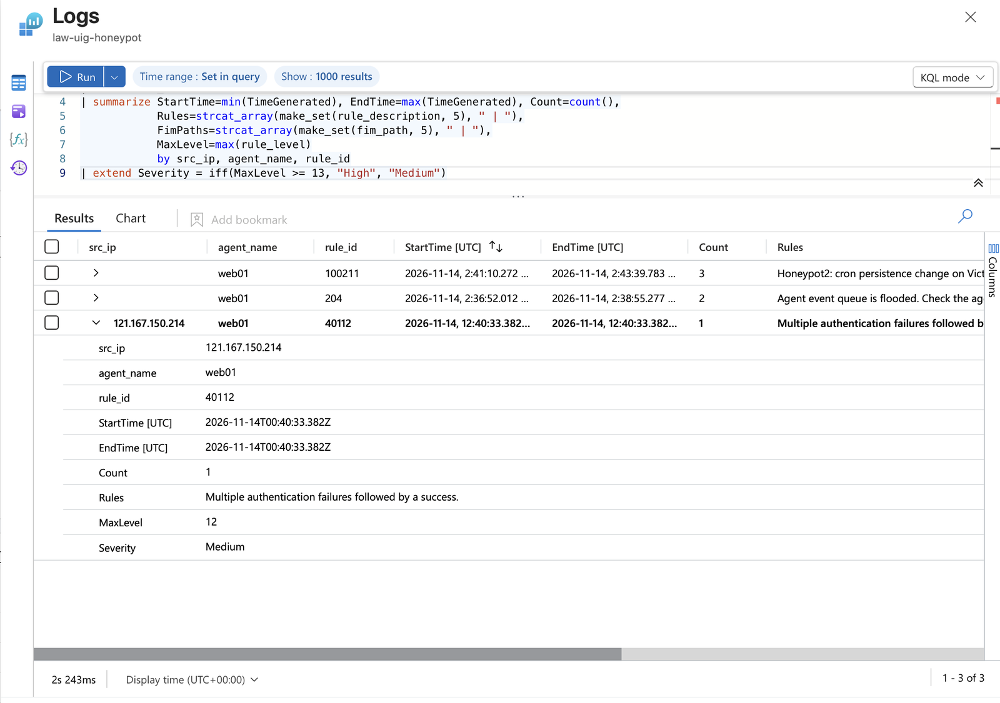
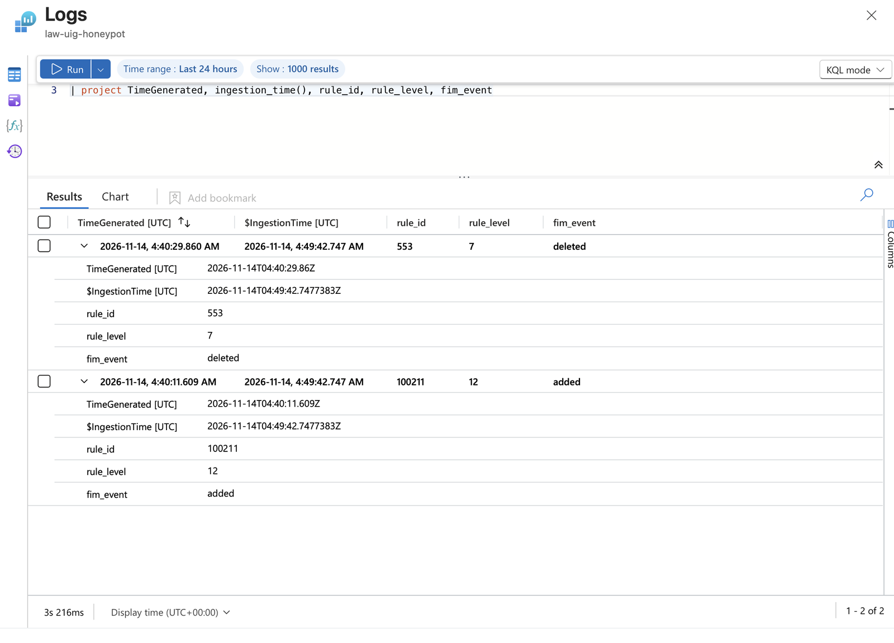
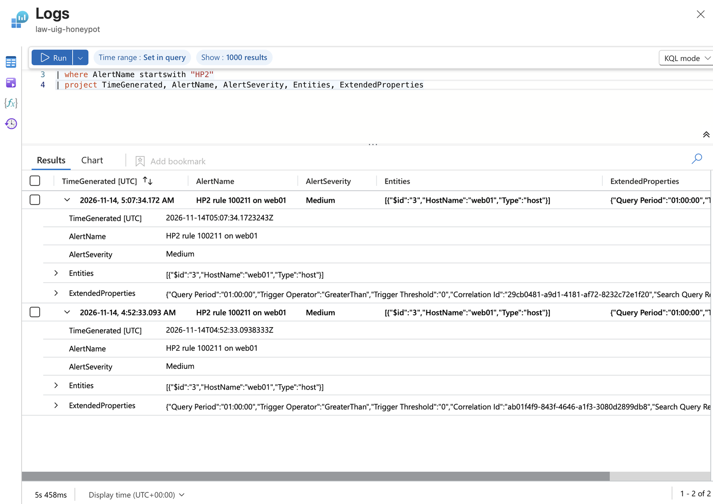
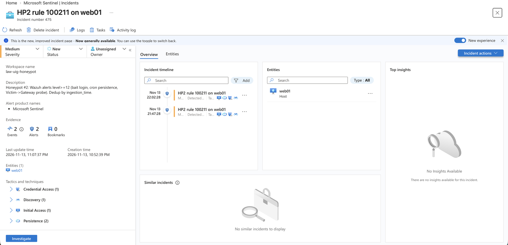

INC-001: Bait account compromised, cryptominer dropped
Honeypot #2 · Incident date 2026-11-14 (UTC) · Analyst: Estul Lachin
Interim report · observation period ends 2026-11-16 03:00 UTC
Summary
At 00:40 UTC on 2026-11-14 a brute-force bot guessed the bait account admin / admin on Honeypot #2.
Two hours later a second botnet stage reused the credential, dropped the cryptominer .dhpcd and set up three kinds of persistence
(cron, SSH keys, a changed password). The attacker never gained root, and no outbound connection succeeded:
two layers of egress control blocked the mining pool, C2 and downloads, so the miner only burns CPU.
The incident is still under observation. The host will be isolated at once if the Wazuh agent goes offline, the victim probes the gateway (rule 100200), or any sign of root appears.
| Item | Finding |
|---|---|
| Severity | Medium (expected inside a honeypot; no data loss, no egress) |
| Initial access | SSH weak password on the bait account admin/admin |
| Objective | Cryptocurrency mining |
| Privilege escalation | None; every privileged action failed (euid 1001) |
| Egress | None; all outbound traffic blocked (GCP VPC firewall + host nftables) |
| First detection | Wazuh rule 40112, level 12, found during manual review in Microsoft Sentinel |
Environment
Honeypot #2 is a real Debian 12 server (web01) on Google Cloud, live since 2026-11-13. Every log is shipped in real time to a separate gateway,
so the attacker cannot destroy the evidence by cleaning the victim.

| Component | Role |
|---|---|
Victim web01 (10.20.0.20) | Public SSH; bait account admin/admin with no sudo; auditd logs every execve by logged-in users; Wazuh FIM with whodata on cron, systemd, authorized_keys and other persistence paths |
| Gateway (10.20.0.10) | Wazuh manager 4.14.10; WireGuard tunnel to the victim (10.99.0.0/24); separate management sshd on the victim reachable only through the tunnel |
| Egress control | Layer 1: GCP VPC egress firewall allows only victim → gateway WireGuard. Layer 2: nftables tripwire on the victim drops and logs every new outbound connection (rule 100201) |
| Microsoft Sentinel | The gateway uploads Wazuh alerts to a custom table every 10 minutes; a scheduled analytics rule raises incidents; an enrichment playbook runs on each one |
The victim has no cloud service account attached, so the metadata server gives an attacker no cloud credentials.
Detection
The intrusion was found during a manual review of rule_level >= 10 events in Sentinel: one Wazuh 40112
("Multiple authentication failures followed by a success", level 12) from 121[.]167[.]150[.]214 against admin.
At that time no analytics rule existed for Honeypot #2, so time from compromise to discovery was about 2 hours.
The investigation exposed four detection gaps, all fixed the same night (see Detection improvements):
| Gap | Consequence |
|---|---|
| 40112 fires only on "failures, then success" | Attackers who already hold the password (the two logins at 02:35) only produce rule 5715, level 3, and would be missed |
| The bait sshd allows keyboard-interactive | Real logins appear as Accepted keyboard-interactive/pam, not Accepted password |
| FIM file added/deleted uses default rules 554/553 | Cron persistence reached only level 5–7, below the Sentinel threshold |
| Agent buffer at the default 5,000 events | The queue overflowed (rule 204) while the attack script walked /proc at 02:36–02:38; some events in that window may be lost |
Timeline (UTC, 2026-11-14)
Three different IP addresses worked in relay. Everything was automated; the core deployment took about 8 minutes.
| Time | Source | Event | Evidence |
|---|---|---|---|
| 00:39:25–00:40:29 | 121[.]167[.]150[.]214 | Brute force against root; all fail because of PermitRootLogin no | Wazuh 5760/5758/5763; journal |
| 00:40:31 | 121[.]167[.]150[.]214 | Accepted password for admin; the session runs no commands (credential check only) | Wazuh 40112; journal |
| 02:35:17 | 169[.]211[.]173[.]89 | Logs in as admin on the first try (keyboard-interactive) | journal |
| 02:35:49 | 51[.]15[.]116[.]168 | Logs in on the first try, no TTY (admin@notty); every later action comes from this session | journal; ps |
| 02:35:52 | 51[.]15[.]116[.]168 | Reconnaissance with top -bn1 | auditd |
| 02:35:56 | script | Uploads and runs dropper nihnukjzydh94kwvu7bntugv8o (116 KB) | auditd |
| 02:36:36–02:37:27 | script | mktemp → crontab → rm: first cron write | FIM whodata |
| 02:37:02–02:37:28 | script | Tries chattr -i + rm on Google guest agent binaries; walks /proc/*/exe to kill competing miners | auditd; Wazuh 204 |
| 02:38:55 | script | Starts the miner /home/admin/.dhpcd (first build, 46 KB) | ps |
| 02:39:55 | script | /etc/shadow modified: the attacker changes the admin password | shadow change date |
| 02:39:56 | script | Runs bash script bpzs0l93v4vc1lm9cgfxk6y9tl; tries mv /usr/bin/ips /usr/bin/ps to replace ps | auditd |
| 02:40:22–02:40:44 | script | Redeploys .dhpcd; tries to change passwords of ubuntu, user, test, oracle, ftpuser and others (all fail) | auditd |
| 02:40:45–02:40:54 | script | Writes two RSA keys to /home/admin/.ssh/authorized_keys | auditd |
| 02:41:10 | script | netstat -plnt; another cron change | auditd; Wazuh 100211 |
| 02:43:13 | script | Swaps in a second .dhpcd build (2.3 MB) and starts it | auditd |
| 02:43:39 | script | Final cron entry: 35 * * * * /home/admin/.dhpcd | Wazuh 100211 |
| 03:35, 04:35 | cron | Hourly relaunch of .dhpcd (exits if already running) | auditd |
Outbound attempts ran continuously from 02:35 onward; the nftables tripwire blocked every one (rule 100201).
Attacker behavior and MITRE ATT&CK
This is a typical staged mining botnet: one node only brute-forces and validates credentials into a shared list, another logs in with that list and deploys. The script never checks its own privileges; it blindly runs root-only steps too.
| Tactic | Technique | Observed |
|---|---|---|
| Credential Access | T1110.001 Password Guessing | Brute force of root, then admin/admin |
| Initial Access | T1078 Valid Accounts | Two more IPs log in on the first try with the harvested credential |
| Discovery | T1057 Process Discovery; T1049 Network Connections Discovery | top -bn1, walking /proc/*/exe, netstat -plnt |
| Execution | T1059.004 Unix Shell | Commands run one by one through bash -c; a bash deployment script |
| Command and Control | T1105 Ingress Tool Transfer | Dropper and miner pushed through the SSH session; outbound downloads blocked |
| Persistence | T1053.003 Cron | 35 * * * * /home/admin/.dhpcd |
| Persistence | T1098.004 SSH Authorized Keys | Two RSA keys added |
| Persistence | T1098 Account Manipulation | admin password changed to lock out rival botnets |
| Defense Evasion | T1036 Masquerading | .dhpcd imitates the DHCP client dhcpcd; leading dot hides it |
| Defense Evasion | T1222.002 Linux File Permissions Modification | chattr -i/-a and chattr +a /etc/shadow (failed) |
| Defense Evasion | T1562.001 Disable or Modify Tools | Tried to delete guest agent binaries and replace ps (failed) |
| Impact | T1496 Resource Hijacking | Miner uses about 50% CPU and 271 MB RAM |
Impact assessment
The attacker never gained root and sent no traffic out. Real impact is limited to the admin account's privileges and the victim's CPU and memory.
Privilege escalation: none. The evidence comes from auditd records stored on the gateway, which the attacker cannot alter:
chattr,rmandmvall ran with euid 1001. The guest agent binaries are still present (dated Oct 21), anddpkg -V procps passwd google-guest-agentreports no changes.passwdshows euid 0 because it is a SUID-root program; it checks the real uid before changing anyone else's password, so this is not evidence of escalation. The attacker could only change its ownadminpassword; ubuntu, test and the other targets do not exist on the host./etc/shadowcarries only the normal ext4eattribute;chattr +anever took effect.
Egress: none. After 02:35 the tripwire recorded outbound attempts only to 107[.]167[.]83[.]34 (ports 80 and 443) and 141[.]94[.]96[.]71, 141[.]94[.]96[.]144 and 141[.]94[.]96[.]195 (port 80). All were blocked: the miner cannot reach its pool and the host was not used to attack anyone.
Data completeness: mostly complete, one known gap. The Wazuh agent queue overflowed twice between 02:36:52 and 02:38:55 (rule 204), so execve records in that window may be incomplete. The rest of the timeline is confirmed by three independent sources: auditd, FIM and the systemd journal.
Resources: the miner uses about 50% CPU and 271 MB RAM; the victim has about 313 MB available and no swap. The Wazuh agent is protected from the OOM killer, so the kernel would kill the miner first.
Indicators of compromise
IP addresses are defanged. Hashes are for lookup only; no sample was uploaded anywhere.
| Type | Value | Role |
|---|---|---|
| IPv4 | 121[.]167[.]150[.]214 | Brute force and credential validation |
| IPv4 | 169[.]211[.]173[.]89 | Login with harvested credential |
| IPv4 | 51[.]15[.]116[.]168 | Deployment and operator session |
| IPv4 | 107[.]167[.]83[.]34 (80, 443) | Outbound target, blocked |
| IPv4 | 141[.]94[.]96[.]71, 141[.]94[.]96[.]144, 141[.]94[.]96[.]195 (80) | Outbound targets, blocked |
| SHA256 | 6a43f59bdc17c0cb34bff1d34e0650913290755f6e9773cbd1e6ef91a6e86c5f | .dhpcd, second build (2,373,616 bytes) |
| File | /home/admin/.dhpcd | Miner (first build 46,560 bytes) |
| File | /home/admin/nihnukjzydh94kwvu7bntugv8o | Dropper (116,816 bytes) |
| File | /home/admin/bpzs0l93v4vc1lm9cgfxk6y9tl | Bash deployment script (6,313 bytes) |
| Cron | 35 * * * * /home/admin/.dhpcd >/dev/null 2>/dev/null | Persistence |
| SSH key | SHA256:yVjsMRgAP4zSvtCTKqUSJESlE1wGWjQU4FuxMKUYKxY (RSA 2048) | Backdoor key |
| SSH key | SHA256:P7d7T+VjNzuXTCwthIGsHiGgQitbY3FoKL3M8qRJOg4 (RSA 2048) | Backdoor key |
Response and evidence handling
Decision: observe, do not clean up. A honeypot's value is seeing what the attacker does next, and every safety boundary held: no root, two layers of egress blocking, logs off the host.
- Read-only triage. Logged in over the WireGuard management channel and used only read-only commands (
who,ss,ps,ls,journalctl). The command history came from Wazuh alerts on the gateway, not fromausearchon the victim. - Evidence preservation. Two archives of
/home/admin, the cron spool and/tmp/tmp.*were copied to the gateway and hashed. They are never extracted or executed. - Protect the monitoring. All five Wazuh agent processes run with
oom_score_adj=-900(persisted with a systemd drop-in); the management sshd already runs at -1000. - Keep the state for 48 hours. The changed
adminpassword stays in place so this group's return pattern can be observed; afterwards the password goes back toadminto reopen the honeypot.
| Archive | Time (UTC) | SHA256 | Contents |
|---|---|---|---|
hp2-inc001-20261114T023929Z.tgz | 02:39:29 | 913c08dda448eb02075ff6cc7d7a00a26b67f8df3fced9c76909a87b05c8cf21 | First .dhpcd build, dropper, bash script, crontab, temp file |
hp2-inc001-20261114T024950Z.tgz | 02:49:50 | 6d3f46e6e002365a66468495334e43a0233b61752b35e667f8a1ff236778e2da | Second .dhpcd build, authorized_keys, final crontab |
Isolation triggers (any one): the Wazuh agent or management sshd goes offline; rule 100200 fires (victim probes the gateway); any sign of root, such as euid 0 on a non-SUID command or a change to /etc/ld.so.preload.
Detection improvements
All four gaps were fixed the same night, a Sentinel analytics rule went live, and a controlled cron change verified the whole chain. The next attacker who logs in with a harvested password now raises a High incident within about 25 minutes.
| ID | Change | Verification |
|---|---|---|
| 100210 | New rule, level 13: admin logs in with Accepted password or Accepted keyboard-interactive, whether or not failures came first | wazuh-logtest: both log formats hit 100210 at level 13 |
| 100211 | New rule, level 12: any add, change or delete under /var/spool/cron or /etc/cron* (if_sid 550/553/554) | Fired on the attacker's cron writes at 02:41 and 02:43; fired on the self-test |
| Agent buffer | client_buffer queue_size raised from 5,000 to 50,000; 500 events per second unchanged | Agent active after restart; all processes at oom_score_adj=-900 |
| Sentinel rule | Scheduled every 15 minutes on rule_level >= 12, deduplicated by ingestion_time(); IP and Host entities; level 13+ is High | Self-test raised incident #475 (one incident, two alerts), closed as Benign Positive |
The threshold moved from the planned 10 to 12: rule 2502 (level 10) fires about every 7 minutes from constant scanning and would have raised about 200 incidents a day.
The self-test also showed:
- Latency: an event reaches Sentinel in about 9.5 minutes and becomes an alert about 12 minutes later, about 25 minutes end to end.
- Duplicate alerts: one record was caught by two consecutive runs near a window edge, but entity grouping merged them into a single incident. Accepted as known behavior.
- Playbook: the enrichment playbook ended as Cancelled after 254 ms on this incident, which has no IP entity. That matches its "skip when there is no IP" design.
Processes started by cron are also logged: Debian's cron goes through PAM, and pam_loginuid sets the audit uid to 1001, which matches the auditd rule auid>=1000.
Lessons learned
In a honeypot, a successful login to the bait account is itself the highest-priority signal. It must not depend on an indirect pattern such as "failures followed by a success".
What worked
- Two layers of egress control held against a real attack: the miner runs, but not one packet got out.
- Logs off the host: the privilege-escalation verdict rests on auditd records stored on the gateway, out of the attacker's reach.
- FIM whodata named the exact process, user and change (
mktemp→crontab→rm). - Isolation followed predefined triggers instead of pulling the plug on sight.
What to improve
- Discovery relied on manual review and took about 2 hours. An analytics rule now covers it.
- Test new rules against real log samples: the first version of 100210 matched only
Accepted passwordand would have missed keyboard-interactive logins. - Do not judge escalation by euid alone: SUID programs such as
passwdalways run with euid 0.
Next steps
- After the observation period (2026-11-16 03:00 UTC), reset the
adminpassword toadminand start phase 2: competing botnets. - Record SSH-key returns (time, source IP), payload updates and new outbound targets, then update this report.
- Extend FIM to new or changed executables under
/home/admin. - Map ATT&CK tactics per Wazuh rule in the analytics rule, instead of the static list every alert carries today.
- Final rebuild of the victim from a clean image against the recorded baseline.
Screenshots
From Microsoft Sentinel (Log Analytics). All times UTC.





